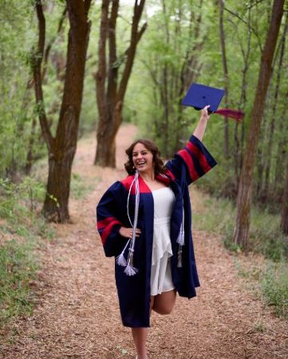
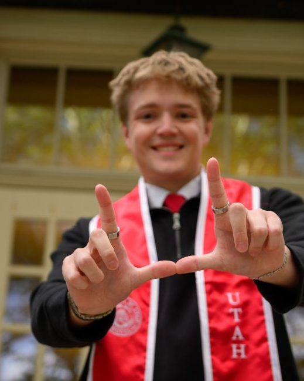

graduation photography · Provo, Utah
Graduation
You did the work. Let's photograph the finish — graduation portraits on campus and around Provo, for you and your people.

The session look
Proud, not stiff.
Graduation photos should feel like a celebration, not a formality. Cap and gown portraits at the places that defined your time at school, plus relaxed portraits without regalia — and group photos with the friends and family who got you here.
Sessions are planned around campus spots and light, so the whole thing feels easy on a busy graduation week.
What to expect
From first message to finished photos.
- Plan togetherWe pick campus locations and a time, and talk through cap and gown, outfits, and who is joining.
- The session itselfA relaxed, guided session on and around campus — regalia portraits, personal portraits, and group photos.
- Your finished photosYour edited photos are delivered as an online gallery. Delivery details are confirmed when you book.
Planning details
Good to know before you book.
- Locations: on campus and around Provo in Provo, Utah, with nearby Provo locations available too.
- What to bring: cap, gown, cords or stoles, and a second outfit if you want portraits without regalia.
- Who can join: friends and family are welcome — mention them in your inquiry so group photos can be planned.
- Timing: graduation season books quickly, so reach out as soon as you know your graduation term.
Gallery
Graduation around Provo


Questions
Graduation FAQ
Where do graduation sessions take place?
Graduation sessions take place on campus and around Provo in Provo, Utah, with nearby Provo locations available too.
Should I bring my cap and gown?
Yes — bring your cap, gown, and any cords or stoles you want in the photos, plus a second outfit if you want portraits without regalia.
Can family or friends join the session?
Yes. Mention who is joining when you get in touch, so the session plan can include group photos with them.
When should I book a graduation session?
Graduation season books quickly, so get in touch as soon as you know your graduation term. Availability is confirmed from your inquiry.
How much does a graduation session cost?
Graduation sessions start at $280. Contact Trevor Adair Photography for availability and booking details.
Your graduation
Let's plan your graduation session.
Share your graduation term and preferred dates — we'll take it from there.